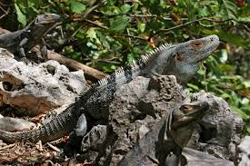

La iguana yucateca, conocida como tolok en la región, es un reptil cuyo nombre científico es Ctenosaura similis. Esta especie habita en gran parte del sureste de México, especialmente en la península de Yucatán, así como en varios países de Centroamérica. El tolok pertenece a la familia Iguanidae y es una de las iguanas más comunes en la región. Se caracteriza por su cuerpo robusto, su larga cola cubierta de escamas espinosas y su gran capacidad para adaptarse a diferentes ambientes. Estas iguanas pueden encontrarse en selvas secas, zonas rocosas, áreas cercanas a cenotes e incluso cerca de comunidades humanas.
1. Clasificación científica
En conclusión, la iguana yucateca o tolok es una especie muy importante para los ecosistemas de la península de Yucatán. Este reptil ayuda a la dispersión de semillas y forma parte de la cadena alimenticia de la región.
Aunque es un animal común en muchas zonas, enfrenta amenazas como la pérdida de su hábitat y la caza por parte de los seres humanos. Por esta razón es importante protegerla y conservar los lugares donde vive. Cuidar al tolok significa también proteger la biodiversidad de la península de Yucatán y mantener el equilibrio natural de los ecosistemas de la región.